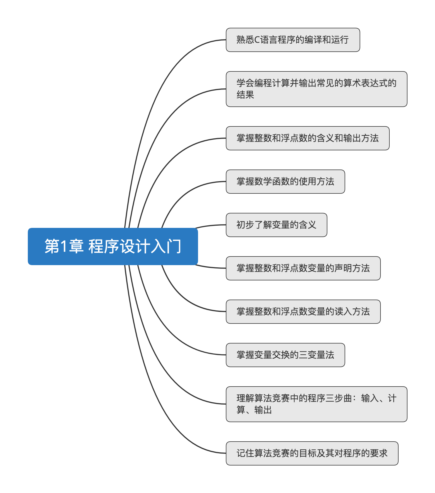
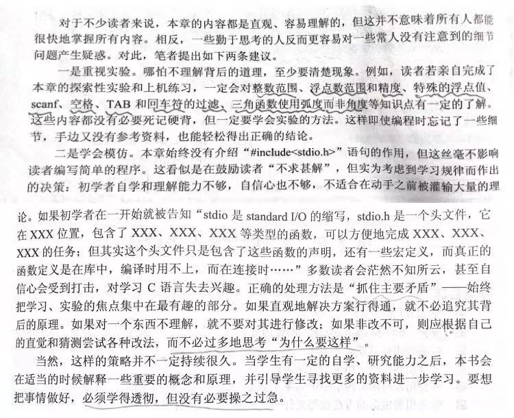

个人笔记，仅供参考，求求自己好好学学别人怎么写代码的叭!!!。
大纲 
实验 数据类型实验 1 2 3 4 5 实验A1: 11111*11111=123454321 / 111111*111111=-539247567 / 111111111*111111111=1653732529 实验A2: macOS下整型变量输入浮点型数据直接输出11111 193015862 1410561978 实验A3: sqrt(-10) 输出nan 实验A4: 1.000000/0.000000=inf(infinite) / 0.000000/0.000000=nan(not a number) 实验A5: 表达式1/0(Floating point exception: 8)
输入格式实验 1 2 3 4 实验B1: 同行空格分开输入12 2，不影响 实验B2: 不同行输入12和2，不影响 实验B3: 输入12和2时同时输入空格或TAB键，不影响 实验B4: 把2换成字符s，12 32766
习题 习题1-1 平均数 题目 输入三个整数，输出他们的平均值，保留三位小数。
答案 1 2 3 4 5 6 7 8 9 #include <stdio.h> int main() { float a,b,c; scanf("%f%f%f",&a,&b,&c); printf("%.3f\n",(a+b+c)/3); return 0; }
习题1-2 温度 题目 输入华氏温度f，输出对应的摄氏温度c，保留3位小数。提示：c=5(f-32)/9。
答案 1 2 3 4 5 6 7 8 9 #include <stdio.h> int main() { float f,c; scanf("%f",&f); printf("c = %.3f\n",5*(f-32)/9); return 0; }
习题1-3 连续和 题目 输入正整数n，输出1+2+···+n的值。提示：目标是解决问题，而不是练习编程。
答案 1 2 3 4 5 6 7 8 9 #include <stdio.h> int main() { int n,i,t=1; scanf("%d",&n); printf("%d\n",n*t+(n-1)); return 0; }
习题1-4 正弦和余弦 题目 输入正整数n(n<360)，输出n度的正弦，余弦函数值。提示：使用数学函数。
答案 1 2 3 4 5 6 7 8 9 10 11 12 #include<stdio.h> #include<math.h> int main() { const double pi = acos(-1.0); int n,x=1,y=1; scanf("%d",&n); printf("%.2lf %.2lf\n",sin(n*pi/180),cos(n*pi/180)); system("pause"); return 0; }
习题1-5 打折 题目 一件衣服95元，若消费300元，可打八五折。输入购买衣服件数，输出需要支付的金额（单位：元），保留两位小数。
答案 1 2 3 4 5 6 7 8 9 10 11 12 #include <stdio.h> int main() { float n; scanf("%f",&n); if(n*95 >= 300) printf("%.2f\n",n*95*0.85); else printf("%.2f\n",n*95); return 0; }
习题1-6 三角形 题目 输入三角形3条边的长度值（均为正整数），判断是否能够为直角三角形的3个边长，如果可以，则输出yes,如果不能，则输出no。如果无法构成三角形，则输出not a triangle。
答案 1 2 3 4 5 6 7 8 9 10 11 12 #include <stdio.h> int main() { int a,b,c; scanf("%d%d%d",&a,&b,&c); if(a*a+b*b==c*c || a*a+b*b==c*c || a*a+b*b==c*c) printf("yes\n"); else printf("not a triangle\n"); return 0; }
习题1-7 年份 题目 题目:输入年份，判断是否为润年，如果是，输出yes，否，输出no。提示：简单的除以4是不够的。
答案 1 2 3 4 5 6 7 8 9 10 11 12 #include <stdio.h> int main() { int LeapYear; scanf("%d",&LeapYear); if((LeapYear%400==0) || (LeapYear%4==0 && LeapYear%100!=0)) printf("闰年\n"); else printf("平年\n"); return 0; }
问题 问题1：int型整数的最小值和最大值时多少（需要精确值）？
1 2 3 4 5 6 7 8 9 10 11 12 13 14 15 16 17 18 19 20 #include <stdio.h> int main() { // int n = 0, i = 0; // while (n >= i) // { // n = i; // i--; // } // printf("%d", n); //-2147483648(最小值) int n = 0, i = 0; while (n <= i) { n = i; i++; } printf("%d",n); //2147483647(最大值) return 0; }
问题2：double型浮点数能精确到多少位小数？或者，这个问题本身值得商榷？
1 2 3 4 5 6 7 8 9 10 #include<stdio.h> int main() { double i = 1.0, j = 3.0; printf("%.20lf\n",i/j); //0.33333333333333331000,16位 return 0; }
问题3：double型浮点数最大正数值和最小整数值分别是多少（不必特别精确）？
1 2 3 4 5 6 7 8 9 10 11 12 #include <stdio.h> #include <float.h> int main() { printf("float 存储最大字节数 : %lu \n", sizeof(float)); //4 printf("float 最小值: %E\n", FLT_MIN ); //1.175494E-038 printf("float 最大值: %E\n", FLT_MAX ); //3.402823E+038 printf("精度值: %d\n", FLT_DIG ); //6 return 0; }
问题4: 逻辑运算符号&&、||、！的相对优先级是怎样的？
1 2 优先级： ! 逻辑非运算符 > && 逻辑与运算符 > || 逻辑或运算符
问题5: if(a) if(b) x++; else y++;的确切含义是什么？这个else应和哪个if配套？有没有明确表达出配套方法？
1 2 3 4 5 6 7 if (a) { if (b) x++; } else { y++; }
小结 
参考 [1] 算法竞赛入门经典第二版（刘汝佳）第一章思考题 - CSDN
[2] 逻辑运算符号&&、||、！的 相对优先级是怎样的? - 百度知道
最后更新时间：2019-11-14 08:11:58